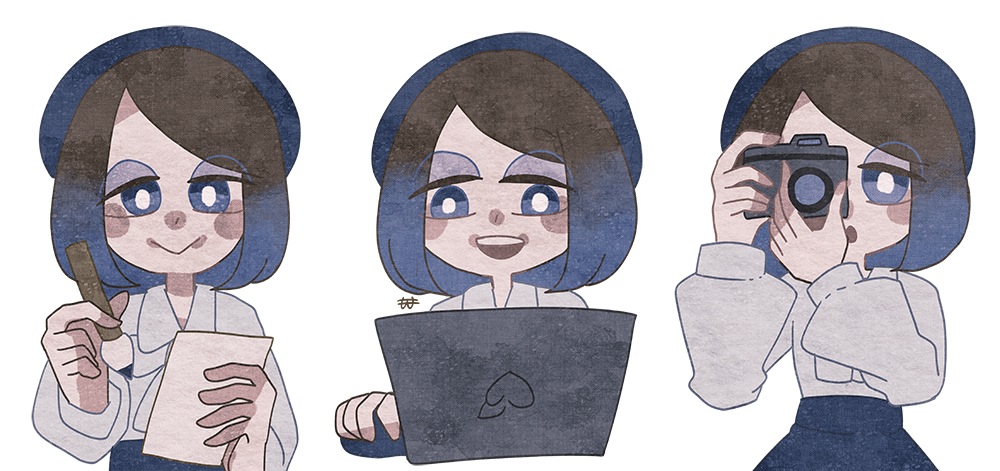

Profile
こんにちは、五十嵐桃香です。
デザインやイラスト、音楽などさまざまな表現で、自分の“好き”を形にしています。
プロフィール
- 名前：五十嵐 桃香
- 出身：神奈川県厚木市
- 得意：優しい・儚い世界観、アンティーク調、水彩、夢のような空間演出
- ツール：Illustrator、Photoshop、Studio One、VOCALOID 他
活動・経歴
- 相模女子大学 学芸学部 生活デザイン学科 卒業
- 卒業制作：コラージュ風アニメ「ウォーリー・ワート」
- 現在：個人でデザイン制作／創作活動を展開中